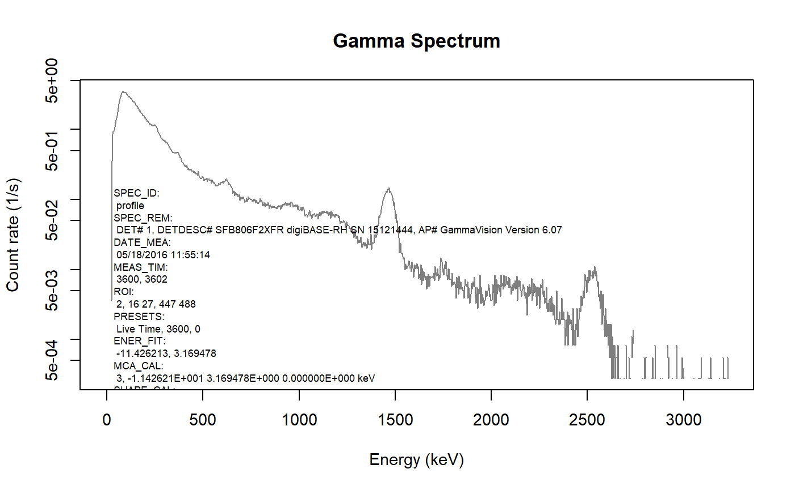
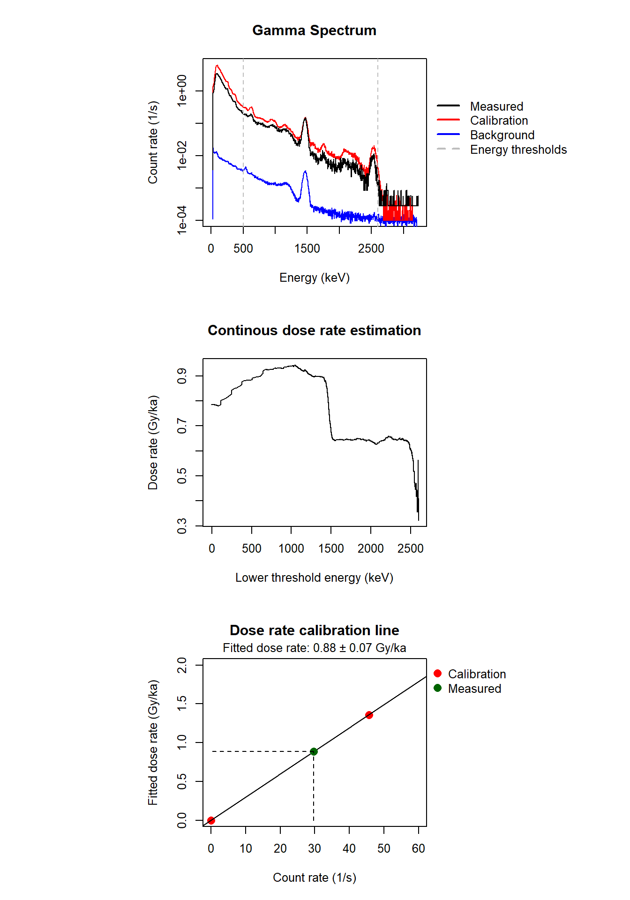

Find a full documentation of the package on the project page
Overview
The R package ‘gammaSpec’ provides a small collection of functions to analyse gamma spectra of NaI(Tl) scintillation radiation detectors.
Installation
The ‘gammaSpec’ package is not available on the official CRAN servers.
However, the latest development builds can directly be installed from GitHub. Simply run the following from an R console
Features
Data import
The function read_SPE() can be used to import SPE files produces by the ORTEC application software ‘MAESTRO Mulichannel Analyzer Emulation’ and ‘GammaVision Gamma Spectroscopy’. All meta information in the SPE files are preserved in the return object.
spectrum <- read_SPE(file)
str(spectrum, max.level = 1)
#> List of 10
#> $ SPEC_ID : chr "profile"
#> $ SPEC_REM : chr [1:3] "DET# 1" "DETDESC# SFB806F2XFR digiBASE-RH SN 15121444" "AP# GammaVision Version 6.07"
#> $ DATE_MEA : chr "05/18/2016 11:55:14"
#> $ MEAS_TIM :List of 2
#> $ DATA :'data.frame': 1024 obs. of 4 variables:
#> $ ROI : chr [1:3] "2" "16 27" "447 488"
#> $ PRESETS : chr [1:3] "Live Time" "3600" "0"
#> $ ENER_FIT :List of 2
#> $ MCA_CAL : chr [1:2] "3" "-1.142621E+001 3.169478E+000 0.000000E+000 keV"
#> $ SHAPE_CAL: chr [1:2] "3" "8.996625E+000 2.588119E-002 0.000000E+000"
#> - attr(*, "class")= chr [1:2] "SPE" "list"Plotting
The package contains a custom S3 method for plot() to quickly visualise the imported spectrum. It further offers to re-calculate the absolute counts per channel to a count rate per energy (keV).
plot(spectrum,
type = c("bar", "line", "point")[2],
xval = c("energy", "channel")[1],
yval = c("rate", "count")[1],
info = TRUE, fill = FALSE)
Estimating the gamma dose rate
The function calc_DoseRate() estimates the in-situ gamma dose rate of the provided gamma spectrum based on the recorded count rate and comparing the integrated sum within a user specified energy range to that of an internal calibration spectrum.
res <- calc_DoseRate(data = spectrum,
energy.min = 500,
energy.max = 2600,
background.correction = TRUE,
plot = TRUE,
plot.combine = TRUE,
app = FALSE,
cex = 0.8)
#>
#> [calc_DoseRate()]
#>
#> Estimated external wet gamma dose rate (including cosmic dose rate):
#>
#> 0.884 ± 0.069